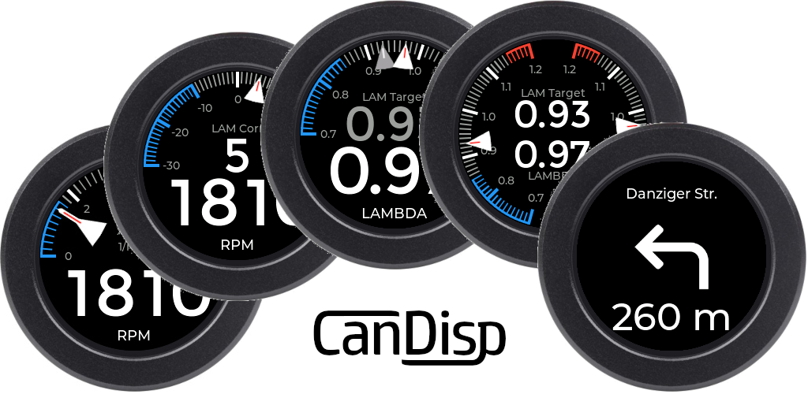
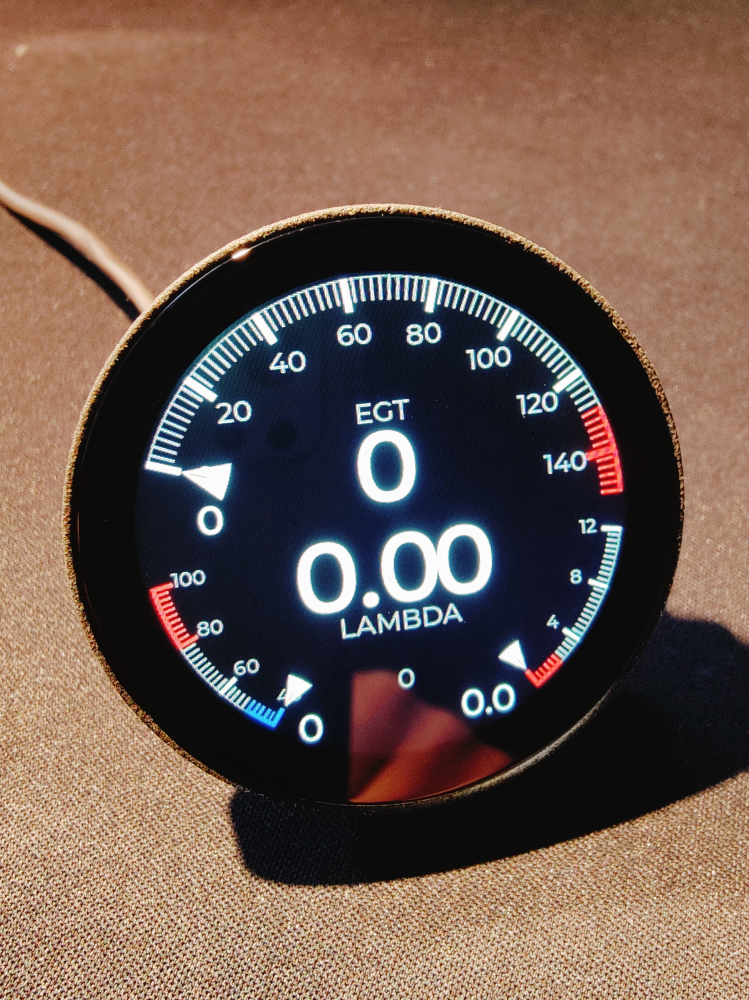

CAN Bus Display
CanDisp 52
CAN bus display for real-time vehicle data
For vehicle development, tuning, and motorsport

CanDisp Street Dyno
Record acceleration runs and compare power and torque in your browser.
About CanDisp
CanDisp is a standalone display for real-time vehicle data. It reads data directly from the CAN bus without requiring changes to existing control units.
Features
- Real-time CAN data display
- 1.85-inch round display, readable in sunlight
- 16 configurable display screens
- Turn-by-turn navigation via BLE
- Web-based configuration over Wi-Fi
- Touch controls and optional external buttons
Listen-only CAN
In listen-only mode, CanDisp receives CAN messages without transmitting them.
Navigation
CanDisp displays turn-by-turn directions received over Bluetooth Low Energy (BLE).
The CanDispNav Android app connects to the display and relays directions from Google Maps.
Hardware
The compact 52 mm unit has a transflective IPS display for readability in direct sunlight.

Integration
Connect CanDisp directly to the CAN bus and power supply. It can be integrated into existing vehicle systems without modifying the control units.
Certification
The device is CE marked and meets the applicable requirements for electronic equipment.
Technical specifications
- Display: 1.85-inch IPS, 360×360 px, 1200:1 contrast ratio
- Supply voltage: 8–15 V DC
- Power consumption: 0.8 W typical
- Operating temperature: −20 °C to +60 °C
- CAN: up to 1 Mbit/s
- Wireless: Wi-Fi and BLE
Documentation & downloads
Find the operating manual, firmware, example configurations, and technical documentation.
Contact
For technical questions or help with integration:
candisp [at] posteo [dot] de